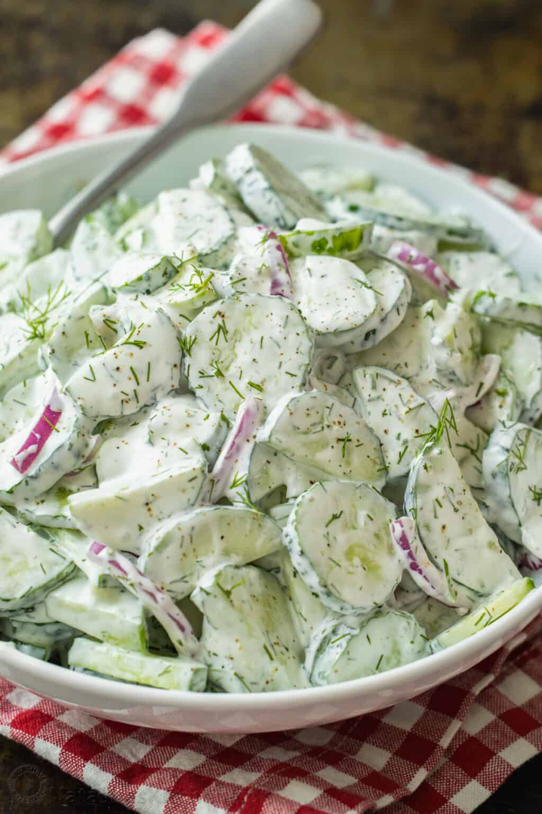

Creamy Cucumber Salad
Description

Ingredients
- 1 1/2 lbs cucumbers, 2 english cucumbers or 7-10 small ones
- 1/2 medium purple or yellow onion, thinly sliced
- 1 Tbsp fresh or frozen dill, chopped
- 1/2 cup sour cream, reduced fat is ok
- 1/2 Tbsp fresh lemon juice, from 1/2 small lemon
- 1 garlic clove, pressed or grated
- 1/2 tsp fine sea salt and pinch black pepper, or to taste
Steps
- In a small bowl, combine sour cream, lemon juice, garlic, dill, salt and pepper to taste. Stir and set aside while prepping salad.
- Peel (if necessary) and slice cucumbers into thin rounds or half rounds if using large cucumbers. Place in a large mixing bowl. Add thinly sliced onion.
- Just before serving, pour the sauce over the cucumbers and onions, and mix to coat. After adding sauce, the salad will stay fresh for about 2-3 hours if refrigerated.